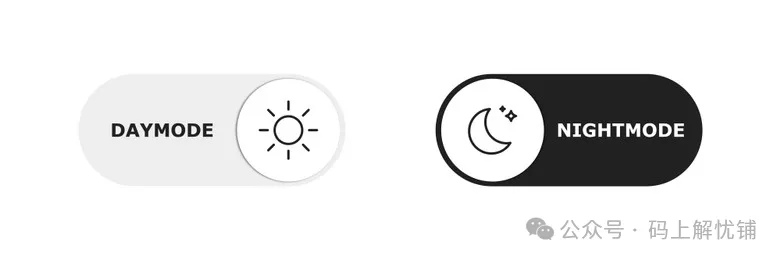

- 高精度实现定时器
- 高效检查 JS 对象中的键是否存在
- 非常强大的标准 JavaScript API - AbortController
- 谈谈前端路由的实现原理 hash ＆ history
- 获取上传进度的几种方式
- 聊聊禁止页面滚动的几种方法
- 缓存 http 错误，避免多次报错提示
- 文件操作
- 数据类型判断方法
- 掌握 JavaScript 中的 Call 和 Apply
- 属性的 getter 和 setter
- 实现鼠标滚轮缩放 SVG 内容
- 实现基于用户操作系统偏好的明暗主题切换
- 宏任务和微任务
- 十个超级好用的 Js 技巧
- 前端的网络状态
- 使用 JS 向现有 SVG 中添加元素
- 使用 JavaScript 加载字体
- 你需要知道的 Symbols
- 一文整懂事件对象 event 的常用方法
- Set 和 WeakSet 的用法和区别
- sessionStorage 能在多个标签页之间共享数据吗
- scrollIntoview
- reduce 的高级用法
- js 小众且好用的技巧
- js 如何监听一个变量改变
- JS 单行代码集
- javascript 奇葩行为大赏
- JavaScript 原生实现图片复制与粘贴
- JavaScript 中设置器和获取器
- FileReader
- EventSource
- ES14 中 5 个最具变革性的 JavaScript 特性
- document.referrer 拦截问题
- 7 种开发人员都应该知道的高级 JavaScript 技术
- 7 种位运算符的神奇用法
- 7 个 Promise 静态方法
实现基于用户操作系统偏好的明暗主题切换
引言
在当今的 Web 开发中，为用户提供个性化体验已成为一种标准做法。其中一个流行的趋势就是支持暗模式，因为它不仅有助于节省电池电量，还能减轻长时间使用屏幕带来的视觉疲劳。在这篇文章中，我们将介绍如何使用简单的 JavaScript 代码和 CSS 来根据用户的操作系统偏好自动切换网站的主题，并允许用户手动在明暗模式之间切换。
目标
我想要实现什么？我试图用这种方法实现两件事。
- 我需要允许网站以用户喜欢的方式加载（他们已经在操作系统中选择了主题的部分）
- 但我还想允许他们在加载后在暗模式和亮模式之间切换。
因此，我们将有一个网站，可以加载用户期望的主题，然后允许他们在需要时进行更改。
实现步骤
步骤 1: 创建切换按钮
首先，我们需要在 HTML 中添加一个按钮或图标作为切换主题的触发器。
<button class="mode" aria-label="Toggle Theme">
<img src="./yueliang.png" />
</button>
我使用的图片作为按钮，其中包含月亮的 svg 图片。您可以添加按钮或复选框，以便在两个选项之间切换。
步骤 2: 将颜色详细信息作为自定义属性放入 CSS 中
接下来，我们需要在 CSS 中定义主题相关的颜色，并使用 color-scheme 属性来指定配色方案。我们将使用 light-dark() 函数来根据用户的偏好自动选择颜色：
:root {
color-scheme: light dark;
--light-bg: ghostwhite;
--light-color: darkslategray;
--light-code: tomato;
--dark-bg: darkslategray;
--dark-color: ghostwhite;
--dark-code: gold;
}
body {
background-color: light-dark(var(--light-bg), var(--dark-bg));
color: light-dark(var(--light-color), var(--dark-color));
}
code {
color: light-dark(var(--light-code), var(--dark-code));
}
.light {
color-scheme: light;
}
.dark {
color-scheme: dark;
}
所以在:root中你会看到名为的属性 color-scheme，这将是我们的游戏规则改变者。如你所见，它接受值 light 或 dark。我还创建了两个类，.light 它们.dark 将配色方案的值设置为深色或浅色。
步骤 3: 为代码的各个部分添加颜色
body {
background-color: light-dark(var(--light-bg), var(--dark-bg));
}
/* ... */
现在，每当属性要求颜色时（例如 background，color 属性），您都可以使用名为的函数 light-dark()【MDN 官方文档】 此函数采用两个值，第一个值在 color-scheme 设置为时使用，第二个值在设置为暗 light 时使用 color-scheme
步骤 4: 使用 JavaScript 在明暗模式间切换
最后，我们需要编写 JavaScript 代码来监听按钮点击事件，并根据用户的系统偏好或当前状态切换主题：
const modeButton = document.querySelector(".mode");
modeButton.addEventListener("click", function () {
const theme = document.documentElement.style.colorScheme;
if (theme === null) {
if (window.matchMedia("(prefers-color-scheme: dark)").matches) {
document.documentElement.style.colorScheme = "light";
} else {
document.documentElement.style.colorScheme = "dark";
}
} else {
document.documentElement.style.colorScheme =
theme === "light" ? "dark" : "light";
}
});
这里，document.documentElement.style.colorScheme 其实是指 :root CSS 中的元素。正如我们在上一步中已经实现以用户首选模式打开网站一样，当单击切换按钮时，它会执行以下工作。
它检查配色方案是否有任何值，如果没有，则网站处于用户首选模式，我们需要确定它是暗还是亮来更改模式。它用于 window.matchMedia("(prefers-color-scheme:dark)").matches 查找它是否处于暗模式，如果处于暗模式，我们将配色方案更改为 light，如果不是，我们将其更改为 dark。下次他们点击按钮时，我们已经为配色方案设置了值，因此我们只需在深色或浅色之间切换。
实现效果